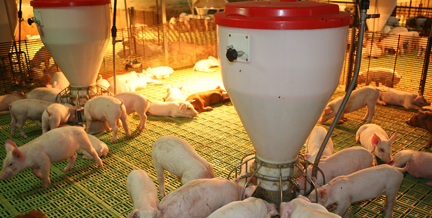

기획취재콘텐츠
- Home
- 제주라이프
- 기획취재콘텐츠
좋은 것에는 모두 이유가 있다. 제주 양돈 산업 3부새로운 글
선진화된 양돈산업의 모습이 궁금하다면, 제주동부축산영농조합법인
스마트축사, 친환경·자연순환농법, 6차 산업 선도기업, 제주동부축산영농조합법인(대표 김태우, 이하 동부축산)을 말할 때면 빠지지 않는 수식어다. 1997년 1월 설립된 동부축산은 제주 단일 규모 농장으로는 최대 규모인 3만 5천 평 부지에 2만 1천 두의 돼지를 사육하는 제주 양돈 농가다.
- 동부축산 전경, 돈사 주변에 나무를 심어 마치 수목원 같은 풍경을 자랑한다.
제주에서 잔치가 있을 때면 빠지지 않는 전통 돼지고기 요리다. ⓒ동부축산 -
제주에서 잔치가 있을 때면 빠지지 않는 전통 돼지고기 요리다. ⓒ동부축산 -
동부축산은 좋은 종돈 못지않게 양돈 환경과 사료가 돼지고기 맛과 품질에 영향을 준다는 점을 인지하고 좋은 사료와 환경 조성에 노력을 아끼지 않았다. 무항생제 인증 배합사료와 목초로 된 친환경 사료를 고집한다. 낮은 사육 밀도를 유지해 스트레스 없는 쾌적한 환경을 유지한다. 돼지 한 마리 당 나무 한 그루를 심는 노력을 통해 청정한 주변 환경을 조성한다. 이러한 노력 덕분에 동부축산은 친환경·자연순환농법으로 2009년 HACCP과 환경친화 축산농장으로 지정됐다. 이어 2013년 7월에는 친환경 농산물(무항생제 축산물)인증을 받았다.
2017년에는 스마트축사 시스템을 구축해 고품질의 돈육을 생산하며 동시에 경제성을 확보할 기반을 마련했다. 현재 동부축산이 도입한 시설은 환경관리기, 포유모돈자동급이기, 냉방기다. 환경관리기는 돈사의 온도와 습도를 표시해주며 적정 온도와 습도에서 크게 벗어날 경우 스마트폰 알람이 울린다. 포유모돈자동급이기는 어미돼지에게 버튼을 눌러 사료를 주는 설비인데, 어미돼지의 먹는 행동을 관찰해 건강 상태 등을 체크할 수 있다. 여름철 무더위로 돼지가 폐사하지 않도록 냉방기도 도입했다.

- 동부축산 돈사 내부, 사육 환경 조성과 사료 배급에 스마트 시스템을 도입했다. ⓒ동부축산 -
스마트축산 시스템을 구축하며 전산으로 중점 관리가 필요한 돼지와 축사 파악이 용이해 관리 시간이 단축되었습니다. 이렇게 아낀 시간과 에너지로 품질관리에 더욱 집중하며 폐사율이 감소하고 출하 체중은 증가해 생산성이 향상됐습니다.
- 제주동부축산 현진협 차장
스마트축사 시스템 도입으로 사육 환경 관리가 용이해지며 MSY(어미돼지 한 마리가 1년간 생산한 돼지 중 출하 체중이 될 때까지 생존해 판매된 마릿수)가 0.3~0.5돈 증가했다. 2019년 동부축산 출하 두 수는 3만 6천 300두, MSY는 22두로 한국 평균 MSY 17.9두에 비해 월등히 높았다.
동부축산은 스마트축사 시스템에 폐사축 및 퇴비 고속발효기와 사료량 측정기를 도입할 예정이다. 폐사축 및 퇴비 고속발효기는 6개월 시험가동을 완료했다. 사료량 측정기를 도입하면 사육하는 돼지의 섭취 사료량을 전산화해 사양 관리에 적용할 수 있다.
고품질 돼지고기 생산 시스템을 구축한 동부축산은 양돈산업의 6차 산업화를 꾀하고 있다. 서울, 경기, 충북, 전남 등 총 20개 가맹점을 운영하는 제주 돼지고기 외식 프랜차이즈 ‘제주몬트락’은 동부축산에서 공동 설립한 브랜드다.
- 제주몬트락에서는 몬트락만의 기술로 숙성한 돼지고기 구이를 맛볼 수 있다. ⓒ제주 몬트락 -
동부축산에서 생산하는 고품질의 제주 돼지를 제주몬트락만의 기술로 숙성해 소비자에게 선보인다. 단일 직영농장에서 공급되는 돼지고기는 균등한 품질과 맛으로 소비자의 입맛을 사로잡는다. 여기에 돈육포와 수세소시지 등 2차 가공품을 개발해 직영점과 온라인 몰에서 판매하고 있다. 돈육포와 수제소시지는 알찬 맛으로 소비자에게 긍정적인 반응을 얻고 있다.
동부축산은 고품질의 돼지고기 생산과 경쟁력 확보를 위해 더욱 공격적인 투자를 확대하고 있다. aT농식품 유통교육원 등 전문기관에서 교육을 통해 유통전문가를 양성한다. 양돈 기술 향상을 위해 선진지 방문과 신기술 및 신제품 도입에도 투자를 아끼지 않는다. 또한, 수출에 대비해 수출 바이어와 미팅, 해외 식품 박람회 참석 등 다방면으로 제주 돼지고기를 해외로 알릴 방안을 마련 중이다.
양돈산업, 제주를 살리고, 제주를 알리는 대표 브랜드로 우뚝
2020년 1월, 도내 돈육 유통업체인 영농조합법인 탐라인(대표이사 고덕훈, 이하 탐라인)은 홍콩 펑다그룹과 제주산 돼지고기 수출계약을 체결했다. 탐라인은 2020년 3월부터 매달 400두(30톤) 규모로 5년간 제주산 돼지고기를 홍콩으로 수출할 예정이다. 수출 규모는 총 1천8백 톤, 수출액은 240억 원으로 전망된다. 고품질의 제주 돼지를 생산하는 농가, 적극적인 해외 마케팅으로 유통망을 확대한 유통업체, 수출에 필요한 지원을 아끼지 않은 제주도가 함께 성취한 놀라운 성과다.
양돈산업은 부가가치가 큰 1차 산업입니다. 2차 가공업, 3차 서비스업까지 확장성이 있습니다. 계절에 영향을 적게 받기 때문에 꾸준히 적정한 생산량을 확보할 수 있습니다. 여기에 사료, 유전학, 수의학까지 다양한 파생산업에도 경제적인 파급력을 가집니다. 도에서는 향후 양돈산업 경쟁력을 확보하고 상생하는 환경을 조성하기 위해 지속 지원할 예정입니다.
- 제주특별자치도 축산과 김경진 팀장
제주도에서는 양돈산업의 경쟁력 확보를 위해 생산기술 향상 및 유통 활성화에 적극 지원 중이다. ICT 융복합 사업으로 적정 사육두수를 유지해 사육 밀도를 조정하고 분뇨처리와 사육 환경 관리를 위한 시스템을 개발 중이다. 또한, 가축 분뇨 인계 시스템을 구축해 지역과 상생할 수 있는 지속 가능한 양돈산업으로의 성장을 꾀하고 있다.
또한, 믿을 수 있는 청정 돼지고기 브랜드 구축을 위해 청정지역에서 생산된 우수한 제주 돼지고기는 JQ인증을 통해 품질을 보증하고 있다. 제주우수제품품질인증제도인 JQ인증은 제주산 원료사용 및 제주특별자치도내 생산되는 우수한 생산품에 대하여 제주특별도지사가 그 품질을 인증하고 통합상표를 사용할 수 있도록 권한을 부여하는 제도다. 여기에 무공해 청정축산물 생산관리제도로 FCG품질인증제를 도입해 △생산자의 운영능력 △대외신용도 △사육시설 △종돈 확보 △생산기술 △위생관리 △출하여건 등의 생산과 유통 과정에서 문제가 없다고 확인될 때만 FCG 인증을 제공한다.
제주의 전통 생활문화의 일부로 오랜 시간 함께한 제주 돼지는 축산 농가, 조합 그리고 축산진흥원 등 양돈산업 관계 기관, 여기에 제주도의 상생을 위한 협력을 바탕으로 제주도의 경제의 큰 축을 담당하는 산업으로 더 나아가 세계적으로 제주를 알릴 브랜드로 꾸준히 성장하고 있다.
이전글
다음글